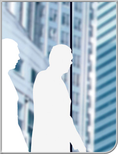

Empresa i iniciativa emprenedora

- Coordinació
- Maria Teresa Montoliu Monfort
- Redacció
- Montserrat Boyero Martín
- Miren Itziar López Lorenzo
- Manuel Martínez Jiménez
- Tomás Ramírez Pérez
- Juan José Rodríguez Gómez
- Adaptació
- Maria Teresa Montoliu Monfort
- Mercè Sitges Querol
- Transversal
- W.CFGX.TRAN.EIE/0.12
- CFGS - Transversal
© Departament d'Educació
Primera edició: Setembre de 2006
Primera edició: Setembre de 2006